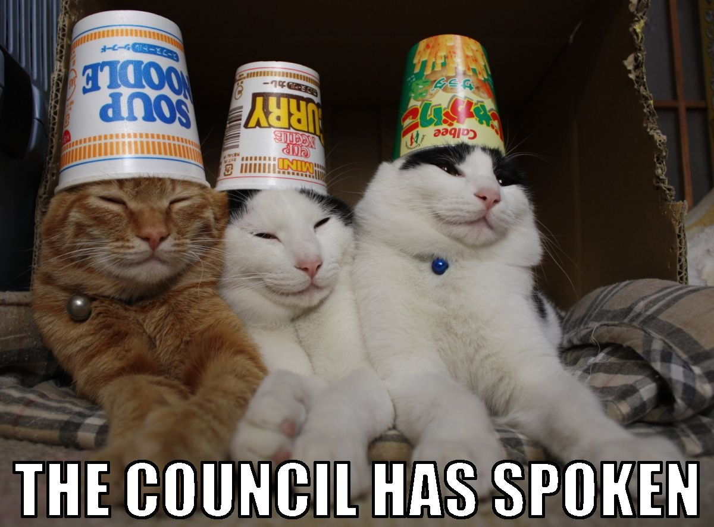

The customer council
Organise it a.s.a.p.
Getting a customer council in place can be quite a chore to accomplish, but having it in place will be extremely valuable for your product. Not only will the customer council deliver you an indispensable source of user testing and (in)validation for your product discovery process, but it's also your first set of reference customers. If you play your cards right, that is.
End users are your best bet
Make sure that you get people in your council that are as close as possible to your actual target users. What's best? Actual end users. As a product manager it's our job to get a deep understanding of our target customers. What are the problems that they want to have solved? What kind of product do we need to create to solve the problem at hand? To get the most out of your council, start recruiting the members as soon as possible. If you find yourself struggling to recruit members, you'll probably also have a hard time selling the product. See this as a reality check: if customers are not interested in the product, are you focusing on the right problem to solve?
"As a product manager it is of great importance to attend every interaction there is with target users."
Keep your head up
It's so easy to put your head down and get to it: only focus on designgin and building the right product, without enough exposure to true target users. Having a customer council will help you as a product manager to keep your eye on the ball, providing real value to real users.
TL;DR
A customer council will help you build your product right and can offer your business development a head start.